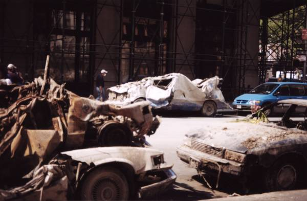
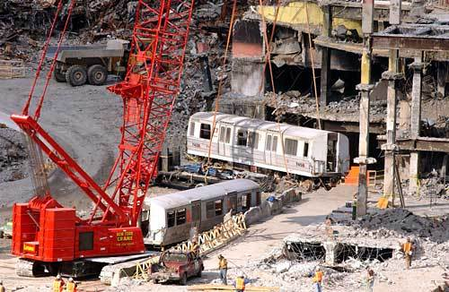
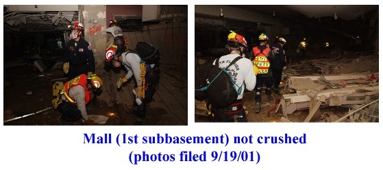
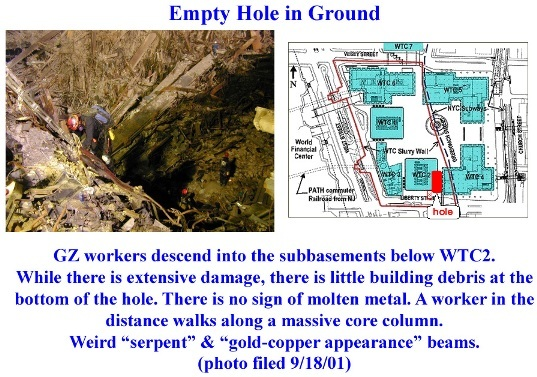

The Very Strange Circumstances of the Greg Jenkins Interview with Judy Wood
Important story here.
There is also a very brief rebuttal of Greg Jenkins recent piece in Jones' "Journal of 9/11 Studies"-- something I've been meaning to do but haven't had time.
To clarify here:
1) I am not getting into "personalities" so much as pointing out that it is interesting that there was this orchestrated "attack" on Judy Wood, clearly intended to make her look bad. They obviously went out of their way to do this. Why?
2) I didn't read Jenkins paper carefully, but I skimmed it. While it is well put together, I think it is flawed from the title to the conclusions. He makes too many assumptions for him to be able to definitively say Wood is wrong.
There is also a very brief rebuttal of Greg Jenkins recent piece in Jones' "Journal of 9/11 Studies"-- something I've been meaning to do but haven't had time.
To clarify here:
1) I am not getting into "personalities" so much as pointing out that it is interesting that there was this orchestrated "attack" on Judy Wood, clearly intended to make her look bad. They obviously went out of their way to do this. Why?
2) I didn't read Jenkins paper carefully, but I skimmed it. While it is well put together, I think it is flawed from the title to the conclusions. He makes too many assumptions for him to be able to definitively say Wood is wrong.
20 Comments:
the jenkins' "interview" of prof wood was just an obvious attempted ambush hit piece - they can't refute her billiard ball example so they try to make her look foolish - a tactic that pinch and conspiracy smasher employ against you - they can't refute the things that you say on your blog here so they try to make it seem as if you are crazy.
but back to prof wood; she not only obviously knows what she is talking about but she makes it as plain as day for everyone else to see that the destruction of the wtc towers did not happen the way that NIST & the 9/11 commission assured us that it did.
to anyone reading this that is unfamiliar with what prof judy wood has exposed about 9/11 i urge you to check out what she has to say:
http://drjudywood.com/
Anonymous said...
oh good one pinch!
prof wood has at least addressed the topic of the oddly burnt cars.
how many of them were there again?
oh ya; around 1400.
how far away from the wtc were some of them again?
oh that's right; an entire mile away.
and how fast did each wtc turn into dust again?
oh i remember now; 10 entire seconds - the astounding rate of 11 floors per second.
who is the bigger retard and moron - pinch, frank greening or greg jenkins?
Anonymous said...
hey! maybe NIST or the 9/11 commission or the "esteemed" frank greening or even greg "distractor" jenkins will meet prof wood face to face for a real discussion about the demise of the twin towers?
they could call it the national 9/11 debate or something like that.
hmmm. i wonder who would be the first to chicken out?
Ningen said...
I agree with Magnus that personalities need to be left out. I don't have an opinion on this debate but don't like the way it is being conducted at 9/11 Blogger and 9/11 Researchers.
One concern I have about Jenkins' arguments is that he talks about "vaporization" of steel, when it is not clear that Wood is saying the steel was vaporized. I seem to remember Wood saying "who said anything about 'vaporize'?"
I don't know if this is correct, but this post to PhysOrgForum describes the energy needed to "dustify" steel as much less than to "vaporize" steel:
http://forum.physorg.com/index.php?showtopic=12383&st=720
NEU-FONZE
Posted: Feb 23 2007, 06:29 PM
The energy to "dustify" iron depends on the particle size you want to reduce the iron to. Very roughly I estimate ~ 0.7 kJ per kg for 1 micron iron dust or 0.7 MJ per kg for 1 nanometer iron dust. (This is consistent with the vaporization energy of 7 MJ per kg because vaporization is equivalent to atomization and the atomic radius of iron is about 0.1 nm)
So, if you want to vaporize 1 tonne of WTC steel during a tower collapse it would require about 7000 MJ of input energy in 10 seconds or an input power of 700 Megawatts per tonne!. That's the electrical energy output of a typical nuclear power station for 10 seconds, JUST TO VAPORIZE ONE TONNE of structural steel!
As for "dustification" the numbers are, of course, a little better, but you still need a mechanism to fracture steel rather than bend it. I believe there WAS fracturing, but mostly of the bolts or welds at the column splices.
Ningen said...
Jenkins says "dustification" of steel is a word invented by Wood and would necessarily involve breaking the bonds holding it together, so that dustification, if it were possible, would require about as much energy.
Anonymous said...
dustification, if it were possible,
well since we can pretty much see the spire turn to dust right before our eyes and we can also see that there is not enough steel on the ground zero aftermath it would seem to be entirely possible that dustification of steel is possible.
even the newest fonze over at saint physorg has not only copped to this but has calculated the energy requirement, ya?
so jenkins believes that it would take roughly the same energy for dustification as for vaporization?
that would tend to rule out the incredible force that NIST claimed was a gravity driven progressive pancake collapse wouldn't it?
ok magnus and/or ningen - where exactly does greg jenkins stand as regarding the official fairytale?
Anonymous said...
"evidently, scorching occurred only from the flames of an adjacent car, not from a directed energy weapon."
~greg jenkins
are you sure greg jenkins?
imagine how hot "the flames of an adjacent car" would have to be to cause this.
and especially this!
i don't think so greg jenkins.

(post 9/11/01) Source
(post 9/11/01) Source
greg jenkins states in his paper that the steel from the towers, rather than having turned into dust, was compacted into the sub basement levels -
if this were true then how did these fragile goods from the mall stores in the basement survive?
and how is it that this subway train is intact?
i don't think so greg jenkins.
(post 9/11/01) Source
(post 9/11/01) Source
the missing steel - the dustified concrete and steel - the scorched cars -
these don't necessarily prove that a directed energy weapon was employed against the twin towers, but they surely prove that the NIST report is nothing more than a cover-up for obvious govt/media lies.

.(2/22/02) Source: Photo/Caption source: New York Times

Original High Resolution:
http://i18.photobucket.com/albums/b108/janedoe444/ARG/Image311.jpg
http://i18.photobucket.com/albums/b108/janedoe444/ARG/Image312.jpg
(9/18/01 entered) Source: FEMA

Original High Resolution:
http://i18.photobucket.com/albums/b108/janedoe444/ARG/Image300.jpg
http://i18.photobucket.com/albums/b108/janedoe444/ARG/Image321.gif
(9/18/01 entered) Source: FEMA
magnus, robot smasher said...
well since we can pretty much see the spire turn to dust right before our eyes and we can also see that there is not enough steel on the ground zero aftermath it would seem to be entirely possible that dustification of steel is possible.
See this vid.
http://st12.startlogic.com/~xenonpup/video%20archive/collapse%2001_spire_clip.avi
terrorize.dk has a better vid, but the site is down. See this unfortunately titled vid for a lesser copy.
http://video.google.com/videoplay?docid=7937273264329816394
The vicious title and text are not relevant. Just skip ahead to about 2:30 in the vid. Dust, but not dustification.
even the newest fonze over at saint physorg has not only copped to this but has calculated the energy requirement, ya?
I'm not hep to your vernacular, but ya, sure.
so jenkins believes that it would take roughly the same energy for dustification as for vaporization?
that would tend to rule out the incredible force that NIST claimed was a gravity driven progressive pancake collapse wouldn't it?
Rule out what? Incredible force?
What would rule it out? Jenkins' belief that one required energy is the same as another? I don't follow.
where exactly does greg jenkins stand as regarding the official fairytale?
Jenkins: As described in a paper by Furlong and Ross22, the plane crash does not appear on
the seismograph charts. Spikes in the chart occur up to 14 seconds too early for the North
Tower, presumably from sub-basement explosions which are corroborated by 37
eyewitness testimonials. No spike occurs at the time of the plane impact.
He is not explicit about where he stands on the OFT. He seems to be in the butt load of bombs camp.
magnus, robot smasher said...
I got contentious and forgot to agree that Jenkins' assumption that the steel was hiding underground is only an assumption.
Anonymous said...
when i said "incredible force" it was just a sarcastic reference to gravity which couldn't account for the extreme poofing that both towers did.
i'm glad that analyses of the towers' demise has gone beyond the collapse time calculation arguments (greening, et al) - since both towers obviously went poof that entire phase would seem to be irrelevant at best. if not a distraction.
Ningen said...
I just want to know if Jenkins is right that "dustification" would take as much energy. If not, then I distrust his argument because he seems to define Wood's argument as "vaporization" and the uses the amount of energy required for vaporization to rebut an argument Wood did not make.
Anonymous said...
Hi Ningen,
Jenkins is just trying to muddy the waters.
Think of a burning log. How much energy does it take to turn the rest of the log into ash?
Well, it doesn't take any energy at all. The log keeps turning to ash if you just stand by and let it burn.
I suspect that Greg knows full well that whatever process caused the WTC to turn to dust was releasing large amounts of energy. Certainly that's how a nuclear reaction works. Certainly that's how fire works. He's just trying to send people in the wrong direction. Core section of skyscraper = highly organized matter. Pile of dust = less organized matter. In the process from going from organized to less organized, energy is released, not absorbed.
He's full of it, and any self-respecting physicist can probably tell you the same thing.
Fred
shep said...
my 2 cents on the "vaporization" vs. "dustification" issue is that both are distinct phenomena. if Wood coined the term "dustification" does it not imply that its different from "vaporization"?
Jenkins uses latent heat of vaporization for steal to show how much energy would be required to "dustify" the towers:
Most of the energy required to vaporize steel is contained in the term relating to the latent heat of vaporization, approximately 75% of the total energy calculated in
Equation 1.3 This is the amount of energy required to vaporize steel once it is already at the boiling point. Since this is the dominating factor in the energy scale, it can be thought of as the energy required to break all the bonds which hold the steel together.
as Ningen alludes to, and i concur, the argument is disingenuous because vaporization is quite different than "dustification". Jenkin's can whine all he wants about Wood inventing a term to describe observed phenomena, but from my reading the unfinished W/R paper, it does NOT refer to vaporization in relation to the towers.
if you have a block of ice, and you stick in in a pot on the stove and turn it on, the energy will go into phase changing the ice to water and then the energy will go into raising the water's temperature and phase change the water into vapor/steam. the energy required to phase change ice to water is known as heat of fusion whereas energy required to phase change water to vapor/steam is known as heat of vaporization. these terms apply equally to all matter.
i imagine Wood invented the term "dustification" because she knew vaporization was not accurate. the towers were not vaporized; they were turned into a fine dust (pulverized?) which permeated lower Manhattan for days afterwards.
if you fire up a circular saw and buzz thru some 2x4's, are you "dustifying" or vaporizing? if you toss those 2x4's in an incinerator, are you "dustifying" or vaporizing? those may be poor analogies, but i think they still highlight to differences between "dustification" and vaporization. it's one thing to turn a material into a fine power/dust but it is quite another thing to turn that same material into a vapor.
Early Wynn said...
Does "MervinFerd" ("DU Disruptor") have a twin here or does "Pinch" just admire him so much that he copies the MFerd style so well that it's impossible to tell the "two" apart?
Anonymous said...
Pinch, Conspiracy Smasher, Sword, and all the other naysayers (spooks, agents, cointelpro operatives who troll this blog and attempt to destroy it) can all eat a BOWL OF DICKS...